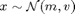

Contents
gTrigT.m
Summary: Test the gTrig function, which computes (at least) the mean and the variance of the transformed variable for a Gaussian distributed input . Check the outputs using Monte Carlo, and the derivatives using finite differences.
function gTrigT(m, v, i, e)
Input arguments:
m mean vector of Gaussian [ d ] v covariance matrix [ d x d ] i vector of indices of elements to augment [ I x 1 ] e (optional) scale vector; default: 1 [ I x 1 ]
Copyright (C) 2008-2013 by Marc Deisenroth, Andrew McHutchon, Joe Hall, and Carl Edward Rasmussen.
Last modified: 2013-03-25
function gTrigT(m, v, i, e)
Code
% create a default test if no input arguments are given if ~nargin D = 4; m = randn(D,1); v = randn(D); v = v*v'+eye(D); i = [2; 4]; I = 2*length(i); e = exp(randn(size(i))); else D = length(m); end n = 1e6; % Monte Carlo sample size delta = 1e-4; % for finite difference approx x = bsxfun(@plus, m, chol(v)'*randn(D,n)); y = bsxfun(@times, [e; e], [sin(x(i,:)); cos(x(i,:))]); y = y(reshape(1:I,I/2,2)',:); % reorder rows [M, V, C] = gTrig(m, v, i, e); Q = cov([x' y']); Qv = Q(D+1:end,D+1:end); Qc = v\Q(1:D,D+1:end); disp(['mean: gTrig Monte Carlo']) disp([M mean(y,2)]); disp([' ']); disp(['var: gTrig Monte Carlo']) disp([V(:) Qv(:)]); disp([' ']); disp(['cov: gTrig Monte Carlo']) disp([C(:) Qc(:)]); disp(' '); disp('dMdm') for j = 1:I checkgrad(@gTrigT0, m, delta, v, i, e, j); disp(['this was element # ' num2str(j) '/' num2str(I)]); end disp(' '); disp('dVdm') for j = 1:I*I checkgrad(@gTrigT1, m, delta, v, i, e, j); disp(['this was element # ' num2str(j) '/' num2str(I*I)]); end disp(' '); disp('dCdm') for j = 1:I*D checkgrad(@gTrigT2, m, delta, v, i, e, j); disp(['this was element # ' num2str(j) '/' num2str(I*D)]); end disp(' '); disp('dMdv') for j = 1:I checkgrad(@gTrigT3, v(tril(ones(length(v)))==1), delta, m, i, e, j); disp(['this was element # ' num2str(j) '/' num2str(I)]); end disp(' '); disp('dVdv') for j = 1:I*I checkgrad(@gTrigT4, v(tril(ones(length(v)))==1), delta, m, i, e, j); disp(['this was element # ' num2str(j) '/' num2str(I*I)]); end disp(' '); disp('dCdv') for j = 1:I*D checkgrad(@gTrigT5, v(tril(ones(length(v)))==1), delta, m, i, e, j); disp(['this was element # ' num2str(j) '/' num2str(I*D)]); end
function [f, df] = gTrigT0(m, v, i, e, j) [M, V, C, dMdm] = gTrig(m, v, i, e); f = M(j); df = dMdm(j,:); function [f, df] = gTrigT1(m, v, i, e, j) [M, V, C, dMdm, dVdm] = gTrig(m, v, i, e); dVdm = reshape(dVdm,[size(V) length(m)]); dd = length(M); p = fix((j+dd-1)/dd); q = j-(p-1)*dd; f = V(p,q); df = squeeze(dVdm(p,q,:)); function [f, df] = gTrigT2(m, v, i, e, j) [M, V, C, dMdm, dVdm, dCdm] = gTrig(m, v, i, e); dCdm = reshape(dCdm,[size(C) length(m)]); dd = length(M); p = fix((j+dd-1)/dd); q = j-(p-1)*dd; f = C(p,q); df = squeeze(dCdm(p,q,:)); function [f, df] = gTrigT3(v, m, i, e, j) d = length(m); vv(tril(ones(d))==1) = v; vv = reshape(vv,d,d); vv = vv + vv' - diag(diag(vv)); [M, V, C, dMdm, dVdm, dCdm, dMdv] = gTrig(m, vv, i, e); dMdv = reshape(dMdv,[length(M) size(v)]); f = M(j); df = squeeze(dMdv(j,:,:)); df = df+df'-diag(diag(df)); df = df(tril(ones(d))==1); function [f, df] = gTrigT4(v, m, i, e, j) d = length(m); vv(tril(ones(d))==1) = v; vv = reshape(vv,d,d); vv = vv + vv' - diag(diag(vv)); [M, V, C, dMdm, dVdm, dCdm, dMdv, dVdv] = gTrig(m, vv, i, e); dVdv = reshape(dVdv,[size(V) size(v)]); dd = length(M); p = fix((j+dd-1)/dd); q = j-(p-1)*dd; f = V(p,q); df = squeeze(dVdv(p,q,:,:)); df = df+df'-diag(diag(df)); df = df(tril(ones(d))==1); function [f, df] = gTrigT5(v, m, i, e, j) d = length(m); vv(tril(ones(d))==1) = v; vv = reshape(vv,d,d); vv = vv + vv' - diag(diag(vv)); [M, V, C, dMdm, dVdm, dCdm, dMdv, dVdv, dCdv] = gTrig(m, vv, i, e); dCdv = reshape(dCdv,[size(C) size(v)]); dd = length(M); p = fix((j+dd-1)/dd); q = j-(p-1)*dd; f = C(p,q); df = squeeze(dCdv(p,q,:,:)); df = df+df'-diag(diag(df)); df = df(tril(ones(d))==1);